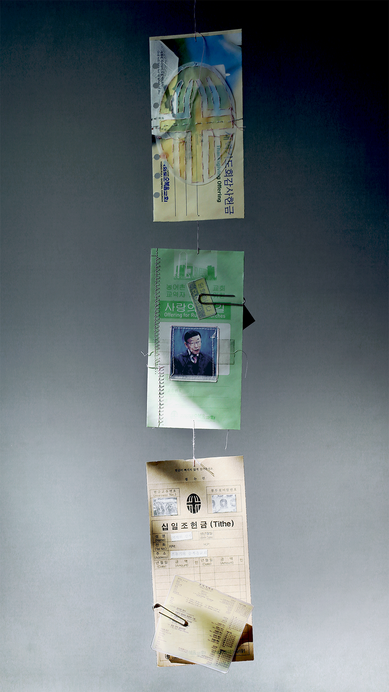

Dabin Kim 多彬 - Typography ↔ Print + Digital --- Dabin Kim 多彬 - Typography ↔ Print + Digital --- Dabin Kim 多彬 - Typography ↔ Print + Digital --- Dabin Kim 多彬 - Typography ↔ Print + Digital ---
Dabin Kim Print Web Info
•••••••••••••••••••••••••••••••••••••••••••••••••••••••••••••••••••••••
Dabin Kim is Typography Apprentice. Tries to explore the boundary of visual language, work in and out between digital and tangible surface. Studying Visual Communication Design at Hongik University, Korea.
Email → dabinkiim@gmail.com Visit → Instagram • Tumblr • Github
Small Practices → Typography _ , Coding _
Yeoui-do Project, book and mobile installation, 2019.

공간은 물리적, 물질적이지만 공간에 담기는 것은 그 이상이다. 공간에는 언제나 욕망과 열망과 무의식이 숨어 있으며 쉬지 않고 작동하고 있다. 할아버지가 교회의 목사이셨다는 우연에서 생산된 여의도와 그 속의 교회에 대한 관심과 궁금증을 확대해 가면서, 책 『건축 멜랑콜리아』 속 ‘모든 것은 정치적이다.’라는 문장이 가지는 주장을 바탕으로 공간이 함유하는 정치 사회적인 맥락을 건축과 관련된 이야기로 책에 풀어내 보고자 했다.
Space is physical and material, but it is more than that.
There are always desires, aspirations, and unconsciousness lurking in space, and they work nonstop. Yeoui-do Project focused on analyzing the artificial island and more of the Yeouido Full Gospel Church, where my grandfather was a pastor of - utill he died. The political and social context of Yeoui-do and the church was interpreted - based on the sentence “Everything is Political.” which is the main theme of the book «Architecture Melancholia».


책은 코리아 모더니티라고 불리는 1960년대 개발의 여의도, 반공주의 기반의 기복신앙의 성공으로 폭발적인 믿음으로 성장한 조영기 목사의 여의도 순복음 교회, 그리고 보편을 대표하는 개인(할아버지) 역사를 하나의 물질적 공간에 나열함으로써 각자의 이야기가 하나의 이야기로 연결될 수 있도록 구성했다.
There was three timeline of political stream, A. Yeouido, a artificial island developed through 1960s called ‘Korea Modernity’. B. A church of martyr Cho Young-ki’s pure gospel, fed and bred by success of on material compensation belief based on Anti-Communism. C. A history of individuals (my grandfather) who emigrated to the city after the Korean War. Each story was connected to one story by listing them in a unitary material space.